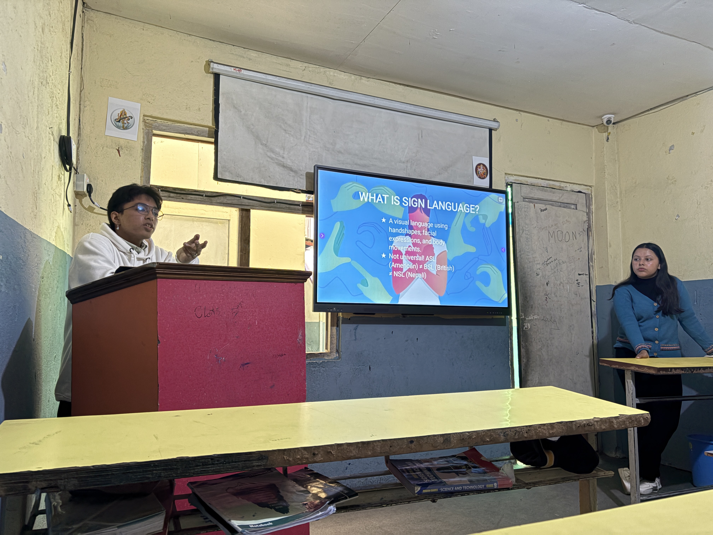
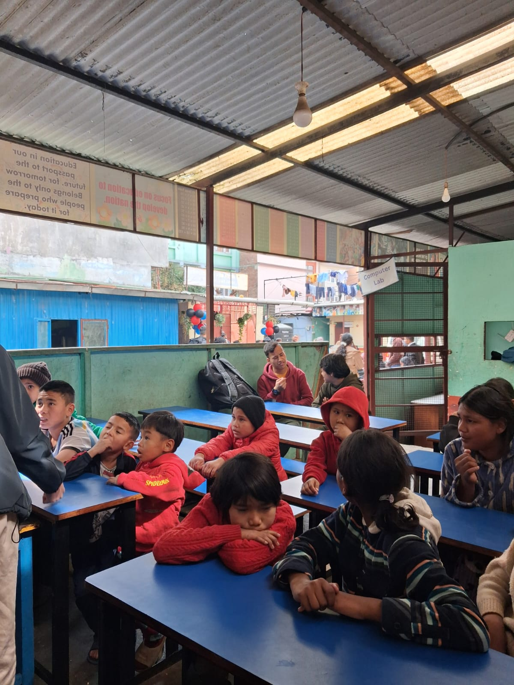

From The Workshops
Moments pinned to memory

Trinity +2

Leo Club, Clinton School

Baal Sewa Foundation
IC Matribhumi
who we are
Project See The Voices is a student-led initiative.
We are focused on teaching and spreading awarness through real-world interaction.
Schools visited
Students reached
Team members
Goal — inclusion
Real words. Real students. Real feelings.
Signs are to eyes what words are to ears.
Hands say things words never could.
Silence isn't empty. I just never knew how to listen to it.
I keep signing words to myself when no one's watching.
There's a whole conversation happening around us we never noticed.
To be understood is everything. I get that now.
Walked home slower. Noticed more. Don't know why.
Something small shifted. The good kind of shift.
Language is just people trying to reach each other. Always has been.
I never thought about what it means to not be heard.
We were all strangers signing badly together. It was kind of beautiful.
Didn't change my life. Just made me pay attention.
Moments pinned to memory
Trinity +2

Leo Club, Clinton School

Baal Sewa Foundation
IC Matribhumi